CHEBFUN GUIDE 6: QUASIMATRICES AND LEAST-SQUARES
Lloyd N. Trefethen, November 2009, revised Feburary 2011
Contents
6.1 Quasimatrices and "spy"
A chebfun can have more than one column, or if it is transposed, it can have more than one row. In these cases we get a quasimatrix, a "matrix" in which one of the dimensions is discrete as usual but the other is continuous. Our default choice will be that of an "infinity by n" quasimatrix consisting of n columns, each of which is a chebfun. When it is important to specify the orientation we use the term column quasimatrix or row quasimatrix.
Here for example is the quasimatrix consisting of the first six powers of x on the interval [-1,1]. The command "size" can be used to identify the continuous dimension, and to find the numbers of rows or columns:
x = chebfun('x');
A = [1 x x.^2 x.^3 x.^4 x.^5];
size(A)
size(A,2)
ans =
Inf 6
ans =
6
Here is the third column of A evaluated at the point x=0.5:
A(0.5,3)
ans = 0.250000000000000
Here are the column sums, i.e., the integrals of 1, x,..., x^5 from -1 to 1:
format short, sum(A), format long
ans =
2.0000 0 0.6667 0 0.4000 0
And here is a plot of the columns:
plot(A), grid on
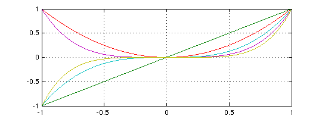 The term quasimatrix comes from [Stewart 1998], and the same idea appears with different terminology in [de Boor 1991] and [Trefethen & Bau 1997, pp. 52-54]. The idea is a natural one, since so much of applied linear algebra deals with discrete approximations to the continuous, but it seems not to have been discussed explicitly very much until the appearance of Chebfun [Battles & Trefethen 2004, Battles 2006].
If f and g are column chebfuns, then f'*g is a scalar, their inner product. For example, here is the inner product of x^2 and x^4 over [-1,1] (equal to 2/7):
A(:,3)'*A(:,5)
ans = 0.285714285714286
More generally, if A and B are column quasimatrices with m and n columns, respectively, then A'*B is the m x n matrix of inner products of those columns. Here is the 6x6 example corresponding to B=A:
format short, A'*A, format long
ans =
2.0000 -0.0000 0.6667 0.0000 0.4000 0.0000
-0.0000 0.6667 0.0000 0.4000 -0.0000 0.2857
0.6667 0.0000 0.4000 0.0000 0.2857 -0.0000
0.0000 0.4000 0.0000 0.2857 -0.0000 0.2222
0.4000 -0.0000 0.2857 -0.0000 0.2222 -0.0000
0.0000 0.2857 -0.0000 0.2222 -0.0000 0.1818
You can get an idea of the shape of a quasimatrix with the overloaded SPY command
subplot(1,2,1), spy(A), title A subplot(1,2,2), spy(A'), title('A''')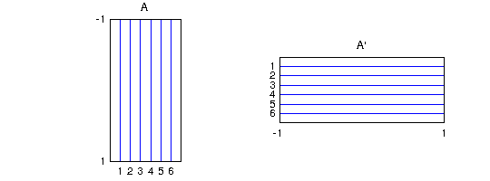
6.2 Backslash and least-squares
In Matlab, the command c = A\b computes the solution to the system of equations Ac = b if A is a square matrix, whereas if A is rectangular, with more rows than columns, it computes the least squares solution, the vector c that minimizes norm(A*c-b). A quasimatrix is always rectangular, and "\" has accordingly been overloaded to carry out the appropriate continuous least-squares computation. (The actual Matlab command that handles backslash is called mldivide.)
For example, continuing with the same chebfun x and quasimatrix A as above, consider the following sequence:
f = exp(x).*sin(6*x); c = A\f
c = 0.309654988398407 4.640757102742477 -2.157249816336411 -20.041645425109216 1.073963006923387 15.477982292828056
The vector c can be interpreted as the vector of coefficients of the least-squares fit to f by a linear combination of the functions 1, x,..., x^5. Here is a plot of f (in blue) and the least-squares approximation (in red), which we label ffit.
ffit = A*c; clf, plot(f), grid on, hold on plot(ffit,'r'), hold off error = norm(f-ffit)
error = 0.356073976001434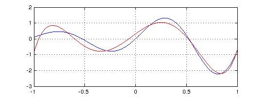
It is a general result that the least-squares approximation by a polynomial of degree n to a continuous function f must intersect f at least n+1 times in the interval of approximation.
Here is quite a different quasimatrix whose columns can be used to fit f. The columns correspond to hat functions located at points equally spaced from -1 to 1, and they are realized as piecewise smooth chebfuns.
A2 = []; for j = 0:8 xj = -1 + j/4; A2 = [A2 max(0,1-4*abs(x-xj))]; end plot(A2) set(gca,'xtick',-1:.25:1)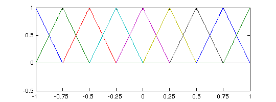
A linear combination of these columns is a piecewise linear function with breakpoints at -0.75, -0.50,...,0.75. Here is the least-squares fit by such functions to f. Remember that although we happen to be fitting here by a function with a discrete flavor, all the operations are continuous ones involving integrals, not point evaluations.
c = A2\f; ffit = A2*c; plot(f), grid on, hold on plot(ffit,'.-r'), hold off set(gca,'xtick',-1:.25:1) error = norm(f-ffit)
error = 0.148137345378415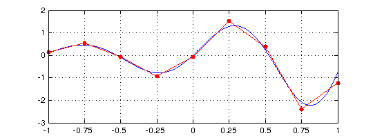
6.3 QR factorization
Matrix least-squares problems are ordinarily solved by QR factorization, and in the quasimatrix case, they are solved by quasimatrix QR factorization. This is the technology underlying the backslash operator described in the last section.
A quasimatrix QR factorization takes this form:
A = QR, where A is inf x n, Q is inf x n, R is n x n.
The columns of A are arbitrary, the columns of Q are orthonormal, and R is an n x n upper-triangular matrix. This factorization corresponds to what is known in various texts as the "reduced", "economy size", "skinny", "abbreviated", or "condensed" QR factorization, since Q is rectangular rather than square and R is square rather than rectangular. In Matlab the syntax for computing such things is [Q,R] = qr(A,0), and the same command has been overloaded for chebfuns. The computation makes use of a quasimatrix analogue of Householder triangularization [Trefethen 2010]. Alternatively one can simply write [Q,R] = qr(A):
[Q,R] = qr(A);
plot(Q), grid on

The spy command confirms the shape of these various matrices. One sees fewer dots in the spy plot than one may expect at first, the reason being that half its entries in the upper-triangle should be zero because of the fact that the columns of A alternate even and odd functions. In fact, because of rounding or truncation errors, not all those mathematical zeros are zero on the computer, so the upper half of spy (R) appears as an imperfect checkerboard.
subplot(1,3,1), spy(A), title A subplot(1,3,2), spy(Q), title Q subplot(1,3,3), spy(R), title R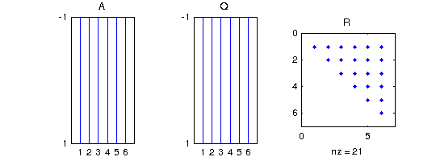
The plot shows orthogonal polynomials, namely the orthogonalizations of the monomials 1, x,...,x^5 over [-1,1]. These are the famous Legendre polynomials {P_k} [Abramowitz & Stegun 1972], except that the latter are conventionally normalized by the condition P(1) = 1 rather than by having norm 1. We can renormalize to impose this condition as follows:
for j = 1:size(A,2) R(j,:) = R(j,:)*Q(1,j); Q(:,j) = Q(:,j)/Q(1,j); end clf, plot(Q), grid on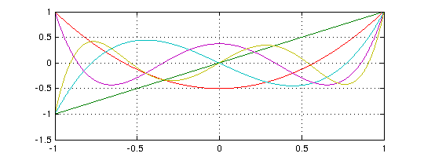
(A slicker way to produce this plot in Chebfun would be simply to type plot(legpoly(0:5)).)
If A=QR, then A*inv (R) = Q, and here is inv (R):
format short, inv(R), format long
ans =
1.0000 0.0000 -0.5000 -0.0000 0.3750 0.0000
0 1.0000 0.0000 -1.5000 0.0000 1.8750
0 0 1.5000 0.0000 -3.7500 0.0000
0 0 0 2.5000 -0.0000 -8.7500
0 0 0 0 4.3750 -0.0000
0 0 0 0 0 7.8750
The kth column of inv (R) is the vector of coefficients for the expansion of the kth column of Q as a linear combination of the columns of A, that is, the monomials 1, x, x^2,.... In other words, the kth column of inv (R) is the vector of coefficients of the kth Legendre polynomial. For example, we see from the matrix that P_3(x) = 2.5x^3 - 1.5x.
Here is what the hat functions look like after orthonormalization:
[Q2,R2] = qr(A2); plot(Q2)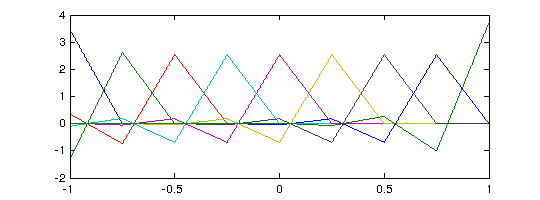
6.4 SVD, norm, cond
An m x n matrix A defines a map from R^n to R^m, and in particular, A maps the unit ball in R^n to a hyperellipsoid of dimension <=n in R^m. The (reduced, skinny, condensed,...) SVD or singular value decomposition exhibits this map by providing a factorization AV = US or equivalently A = USV', where U is m x n with orthonormal columns, S is diagonal with nonincreasing nonnegative diagonal entries known as the singular values, and V is n x n and orthogonal. A maps v_j, the jth column of V or jth right singular vector, to s_j times u_j, the jth column of U or jth left singular vector, which is the vector defining the jth largest semiaxis of the hyperellipsoid. See Chapters 4 and 5 of [Trefethen & Bau 1997].
If A is an inf x n quasimatrix, everything is analogous:
A = USV', where A is inf x n, U is inf x n, S is n x n, V is n x n.
The image of the unit ball in R^n under A is still a hyperellipsoid of dimension <=n, which now lies within an infinite-dimensional function space. The columns of Q are orthonormal functions and S and V have the same properties as in the matrix case.
For example, here are the singular values of the matrix A defined earlier with columns 1,x,...,x^5:
s = svd(A,0)
s = 1.532062889375340 1.032551897396699 0.518125864967968 0.258419769500035 0.080938947808205 0.035425077461572
The largest singular value is equal to the norm of the quasimatrix, which is defined by norm(A,2) = max_x norm(A*x)/norm(x).
norm(A,2)
ans = 1.532062889375340
(Note that we must include the argument "2" here: for reasons of speed, the default for quasimatrices, unlike the usual Matlab matrices, is the Frobenius norm rather than the 2-norm.) The SVD enables us to identify exactly what vectors are involved in achieving this maximum ratio. The optimal vector x is v1, the first right singular vector of A,
[U,S,V] = svd(A);
First we use spy to confirm the shapes of the matrices. As with spy (R) earlier, here spy(V) should in principle show a checkerboard, but some of its blanks are turned into dots by rounding or truncation errors.
subplot(1,4,1), spy(A), title A subplot(1,4,2), spy(U), title U subplot(1,4,3), spy(S), title S subplot(1,4,4), spy(V), title V v1 = V(:,1)
v1 = 0.913034433780914 -0.000000000000000 0.344611116356111 -0.000000000000000 0.218200140270717 -0.000000000000000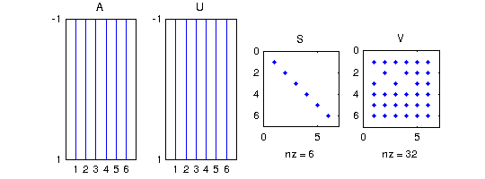
Next we confirm that the norm of v1 is 1:
norm(v1)
ans = 1.000000000000000
This vector is mapped by A to the chebfun s1*u1:
u1 = U(:,1); norm(u1)
ans = 1.000000000000000
s1 = S(1,1)
s1 = 1.532062889375340
norm(A*v1)
ans = 1.532062889375340
norm(A*v1-s1*u1)
ans =
8.763429766539204e-16
Similarly, the minimal singular value and corresponding singular vectors describe the minimum amount that A can enlarge an input. The following commands plot the extreme functions A*v1 (blue) and A*vn (red). We can interpret these as the largest and smallest degree-5 polynomials, as measured in the 2-norm over [-1,1], whose coefficient vectors have 2-norm equal to 1.
clf, plot(A*v1), grid on, hold on vn = V(:,end); plot(A*vn,'r'), hold off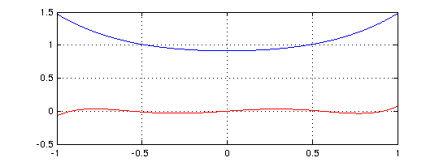
The ratio of the largest and smallest singular values -- the eccentricity of the hyperellipsoid -- is the condition number of A:
max(s)/min(s)
ans = 43.247975704139805
cond(A)
ans = 43.247975704139805
The fact that cond(A) is a good deal greater than 1 reflects the ill-conditioning of the monomials 1,x,...,x^5 as a basis for polynomials in [-1,1]. The effect becomes rapidly stronger as we take more terms in the sequence:
cond([1 x x.^2 x.^3 x.^4 x.^5 x.^6 x.^7 x.^8 x.^9 x.^10])
ans =
3.072959852624408e+03
By contrast a quasimatrix formed of suitably normalized Legendre polynomials has condition number 1, since they are orthonormal:
cond(legpoly(0:10,'norm'))
ans = 1.000000000000001
A quasimatrix of Chebyshev polynomials doesn't quite achieve condition number 1, but it comes close:
cond(chebpoly(0:10))
ans = 3.712641510134901
Chebyshev polynomials form an excellent basis for expansions on [-1,1], a fact that is the starting point of Chebfun.
6.5 Other norms
The definition norm(A) = max_x norm(A*x)/norm(x) makes sense in other norms besides the 2-norm, and the particularly important alternatives are the 1-norm and the inf-norm. The 1-norm of a column quasimatrix is the "maximum column sum", i.e., the maximum of the 1-norms of its columns. In the case of our quasimatrix A, the maximum is attained by the first column, which has norm 2:
norm(A,1)
ans = 1.938148951041007
The inf-norm is the "maximum row sum", which for a column quasimatrix corresponds to the maximum of the chebfun obtained by adding the absolute values of the columns. In the case of A, the sum is 1+|x|+...+|x|^5, which attains its maximum value 6 at x=-1 and 1:
norm(A,inf)
ans =
6
The norms of row quasimatrices are analogous, with norm(A',inf) = norm(A,1) and norm(A',1) = norm(A,inf). Like Matlab itself applied to a rectangular matrix, Chebfun does not define cond(A,1) or cond(A,inf) if A is a quasimatrix.
The Frobenius or Hilbert-Schmidt norm is equal to the square root of the sum of the squares of the singular values:
norm(A,'fro')
ans = 1.938148951041007
6.6 rank, null, orth, pinv
Chebfun also contains overloads for some further Matlab operations related to orthogonal matrix factorizations. Perhaps the most useful of these is rank(A), which computes the singular values of A and makes a judgement as to how many of them are significantly different from zero. For example, with x still defined as before, here is an example showing that the functions 1, sin(x)^2, and cos(x)^2 are linearly dependent:
B = [1 sin(x).^2 cos(x).^2]; rank(B)
ans =
2
Since B is rank-deficient, is has a nontrivial nullspace, and the command null(B) will find an orthonormal basis for it:
null(B)
ans = -0.577350269189626 0.577350269189626 0.577350269189626
Similarly the command orth(B) finds an orthonormal basis for the range of B, which in this case has dimension 2:
orth(B)
ans =
chebfun column 1 (1 smooth piece)
interval length endpoint values
[ -1, 1] 17 0.61 0.61
vertical scale = 0.76
chebfun column 2 (1 smooth piece)
interval length endpoint values
[ -1, 1] 17 -1.4 -1.4
vertical scale = 1.4
If A is an inf x n column quasimatrix, the command pinv(A) computes the pseudoinverse of A, an n x inf row quasimatrix such that pinv(A)*c = A\c.
Here is a summary of the dimensions of these objects:
subplot(1,3,1), spy(null(B)), title null(B) subplot(1,3,2), spy(orth(B)), title orth(B) subplot(1,3,3), spy(pinv(A)), title pinv(A)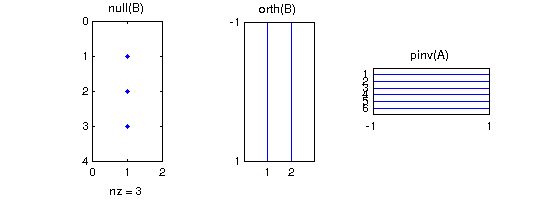
6.7 References
[Abramowitz & Stegun 1972] M. A. Abramowitz and I. A. Stegun, eds., Handbook of Mathematical Functions with Formulas, Graphs, and Mathematical Tables, 9th printing, Dover, 1972.
[Battles 2006] Z. Battles, Numerical Linear Algebra for Continuous Functions, DPhil thesis, Oxford University Computing Laboratory, 2006.
[Battles & Trefethen 2004] Z. Battles and L. N. Trefethen, "An extension of Matlab to continuous functions and operators", SIAM Journal on Scientific Computing 25 (2004), 1743-1770.
[de Boor 1991] C. de Boor, "An alternative approach to (the teaching of) rank, basis, and dimension", Linear Algebra and its Applications 146 (1991), 221-229.
[Stewart 1998] G. W. Stewart, Afternotes Goes to Graduate School: Lectures on Advanced Numerical Analysis, SIAM, 1998.
[Trefethen 2008] L. N. Trefethen, "Householder triangularization of a quasimatrix", IMA Journal on Numerical Analysis 30 (2010), 887-897.
[Trefethen & Bau 1997] L. N. Trefethen and D. Bau, III, Numerical Linear Algebra, SIAM, 1997.